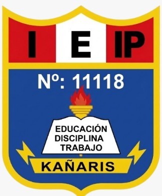
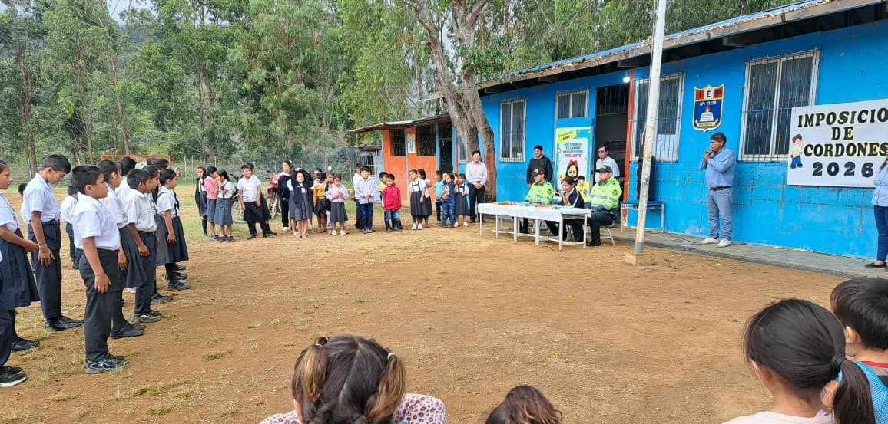
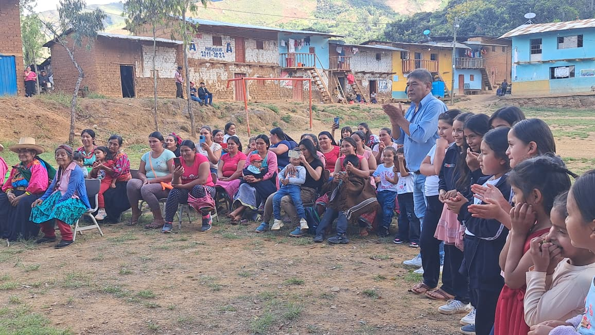

"EDUCACIÓN, DISCIPLINA Y TRABAJO"
En la Institución Educativa N.° 11118 - Kañaris formamos más que estudiantes, formamos personas con valores, metas y visión de futuro. Somos una comunidad educativa pública ubicada en el caserío San Cristobal, que apuesta por una educación de calidad, inclusiva y conectada con la realidad de nuestros estudiantes.
Creemos en el talento de cada alumno y en su capacidad para transformar su entorno.
La Institución Educativa N.° 11118 del caserío de San Cristóbal brinda una educación integral y de calidad a los estudiantes de los niveles de inicial y primaria, promoviendo el desarrollo de competencias, capacidades y valores. Forma estudiantes creativos, críticos y responsables, comprometidos con su aprendizaje, su identidad cultural y el cuidado de su entorno, fortaleciendo la participación activa de la comunidad para contribuir al desarrollo sostenible de una sociedad justa y solidaria.
Al año 2030, la Institución Educativa N.° 11118 de la comunidad de San Cristóbal será reconocida por la comunidad educativa y las autoridades del sector educación por brindar una educación rural de calidad, formando estudiantes competentes, críticos, creativos y con sólidos valores, comprometidos con su identidad cultural, el cuidado del ambiente y el desarrollo de su comunidad, con la participación activa de las familias.
Prof. Jorge Bello ZAVALETA JULCA.


.